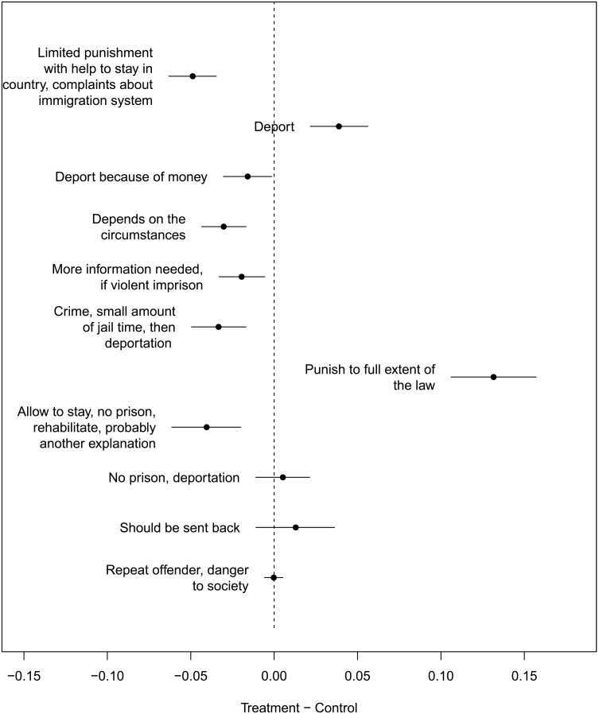

机器学习与自然语言处理
AI + 计算社会科学微专业
Part 1什么是机器学习与自然语言处理
一个场景
你是一个政策研究者。
你刚拿到过去 10 年间，全国 31 个省的政府工作报告。
3,200 份 × 15,000 字
你的研究问题：各省的政策重心在这十年是怎么变化的？
你打算怎么做？
3,200 × 15,000 = 4,800 万字
人工阅读
~1.5 年
按 300 字/分钟，每天 8 小时
而且只是"读完"，还没开始分析
vs
计算方法
~3 分钟
处理全部文本
输出主题分布、趋势、省际对比
但是——机器能"读"吗？
机器不认识字。
机器只认识数字。
"这个政策很好"
人类秒懂
人类秒懂
？
[0.82, 0.15, 0.03, ...]
机器能计算
机器能计算
关键问题：怎么把文字变成数字，还不丢掉意思？
从文字到向量
意思相近的词，在数字空间里靠得近
"经济发展" → [0.82, 0.15, 0.03]
"GDP增长" → [0.79, 0.18, 0.01]
"环境保护" → [0.11, 0.85, 0.04]
"碳中和" → [0.09, 0.88, 0.06]
每个词变成一串数字（向量）
每个数字代表语义空间的一个维度
经济发展
GDP增长
环境保护
碳中和
← 距离远 →
意思不同
意思不同
有了数字，就能计算
分类
这条评论是正面还是负面？
这篇报道的政治立场是什么？
这篇报道的政治立场是什么？
聚类
这10万条微博在讨论哪些话题？
它们之间是什么关系？
它们之间是什么关系？
相似度
哪两个省的政策报告最像？
这篇论文和哪些文献最相关？
这篇论文和哪些文献最相关？
趋势
"创新"在政策话语中的权重
10年间怎么变的？
10年间怎么变的？
你一直在问这些问题。区别是以前只能问几十条，现在能问几万条。
有监督：你示范，机器模仿
你标注 500 条
支持 / 反对 / 中立
支持 / 反对 / 中立
机器学习找规律
什么词对应什么判断？
什么词对应什么判断？
自动标注 49,500 条
准确率 85%+
准确率 85%+
你的判断力 × 机器的速度 = 大规模分析
你先做500条样板，机器照着你的标准处理剩下49,500条。
你先做500条样板，机器照着你的标准处理剩下49,500条。
无监督：发现你不知道的
10年人民日报全文
无任何标注
无任何标注
主题模型
经济 增长 改革 市场
环境 生态 碳排放 绿色
教育 人才 科技 创新
外交 合作 一带一路
环境 生态 碳排放 绿色
教育 人才 科技 创新
外交 合作 一带一路
然后你会看到："创新"主题从 2015 年开始急剧上升。
——这是你逐篇阅读时很难捕捉的宏观趋势。
——这是你逐篇阅读时很难捕捉的宏观趋势。
有监督
你定义标准 → 机器执行
无监督
数据自己说话 → 你来解读
NLP 怎么走到今天
四个阶段，一个比一个敢想
1.0
数词
一篇文章出现了多少次"经济"？ （词频 / TF-IDF）
2.0
理解词义
"经济"和"发展"总一起出现——它们意思相近 （Word2Vec）
3.0
理解语境
"苹果"在不同句子里——是水果，还是公司？ （BERT）
4.0
理解意图
"帮我分析这份报告的政策倾向"——它就去做 （GPT / Claude）
大语言模型改变了什么
2020 年之前
每个任务 → 独立模型
需要大量标注数据
需要训练与调参
门槛：会编程
需要大量标注数据
需要训练与调参
门槛：会编程
→
现在
一个模型 → 几乎所有任务
用自然语言描述需求
零样本 / 少样本学习
门槛：会提问
用自然语言描述需求
零样本 / 少样本学习
门槛：会提问
ML 与 NLP 是什么关系
机器学习
怎么学
从数据中发现规律的
通用方法论
通用方法论
提供学习方法 →
← 提供最大的战场
自然语言处理
学什么
让机器理解人类语言的
应用方向
应用方向
ML 提供了一套从数据中学习的方法；NLP 把这套方法用在了语言上。
NLP 把人类语言
变成了可计算的数据。
以前做社科研究，文本数据看得见、用不了。
现在能用了。
接下来 → 研究者已经用这些工具发现了什么
Part 2ML/NLP 能为社会科学做什么
文本数据里，因果推断有四种玩法
做了什么：提出统一框架：文本可做处理/结果/混淆/调节变量，对应不同因果设计。
发现：左图是四种设计的 DAG 框架，右图是实证应用——移民实验中文本发现的处理效应。
发现：左图是四种设计的 DAG 框架，右图是实证应用——移民实验中文本发现的处理效应。

四种文本因果设计的 DAG 框架

实证应用：移民实验处理效应
Egami, Fong, Grimmer et al. · Science Advances 8, 2022
这些离你有多远？
工具已成熟，门槛在降低。
这门课就是带你跨过这道门槛。
这门课就是带你跨过这道门槛。
能做什么、不能做什么
能
- 大规模文本分析
- 自动分类与标注
- 发现隐藏模式
- 辅助研究设计
不能
- 替代理论思考
- 保证因果推断
- 消除数据偏见
- 脱离领域知识运作
课程路线图
第 1–5 周
模块一 ML 基础
课程导论
机器学习技术基础
ML 与社会科学
有监督学习
无监督学习
机器学习技术基础
ML 与社会科学
有监督学习
无监督学习
第 6–9 周
模块二 NLP 技术
文本处理基础
文本分类
主题模型
大语言模型
文本分类
主题模型
大语言模型
第 10 周
期中交流
第 11–15 周
模块三 应用实战
多模态 AI
社交媒体分析
政策文本分析
问卷开放题分析
AI 伦理
社交媒体分析
政策文本分析
问卷开放题分析
AI 伦理
第 16 周
期末简报
课程安排
三个模块
- 机器学习基础——核心概念与直觉
- 自然语言处理——让机器读懂文本
- 社会科学应用——在你的领域落地
不要求编程基础。重点是理解方法和解读结果。
学完这门课，你能做什么
- 看到一篇用 NLP 方法的论文，读懂它在干什么
- 判断一个问题适不适合用计算方法来回答
- 跟技术团队说清楚你要什么、结果好不好
- AI 给你一个结论，你知道该不该信
期末简报
- 选题 围绕自身专业/工作，选一个 ML/NLP 可以帮忙的场景
- 分析 用课程介绍的工具做一次初步分析
- 展示 课堂简报，展示思路、过程与发现
不要求写代码，重在理解方法与解读结果。
考核方式
课堂参与
出勤 + 讨论
课程小作业
随堂练习
期末简报
选一个你自己领域的问题，
用课上学到的方法做一次分析
用课上学到的方法做一次分析